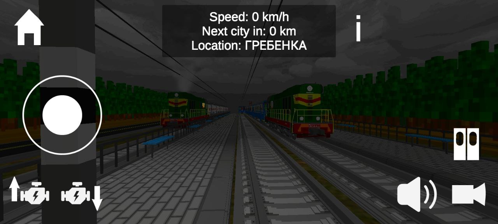

×

"Сегодня игре SkyRail исполняется 1 год! Первая версия SkyRail была выпущена 25 июля 2021 года. В тот момент игра называлась "Симулятор электрички ЭД4М", а функционал был крайне скудным.
- 🗓 Что же изменилось за это время? Давайте вспомним все глобальные обновления:
- 1.0.0 - новая механика с маршрутами между городами и первым поездом дальнего следования
- 2.0.0 - ноуклип и редактор поездов
- 3.0.0 - мультиплеер и глобальная переработка вагонов
- 🏅Наши достижения за это время:
- 100000+ скачиваний
- 30000+ телефонов с установленной игрой на данный момент
- 1500+ отзывов в Play Market
- 500+ видео по игре SkyRail в Youtube
- 50000+ просмотров на официальном канале разработчика
- Спасибо всем, кто с нами!♡"
Contact Us
Следите за новостями и общайтесь об игре или делитесь предложениями в SkyTech - обсуждение проектов и SkyTech (GameDev).